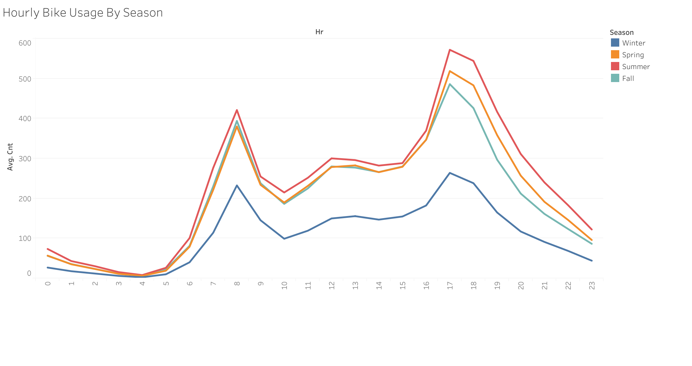

Bike Sharing in DC
exploratory analysis of bike sharing data
Background
Over the last 10 years, bike sharing has become more and more popular in big cities, specifically in Washington DC. Having explored several datasets (2010-2021) from the Capital Bikeshare program regarding the use of these bikes, our goal in this project page is to pass on our insights into how citizens and tourists use the DC program. Through these findings, decisions can be made on where to best place bikes, program passes to offer, and what other cities would most benefit from the introduction of the bike share system. We have created geographical mappings of the trips that are taken and a number of different plots showing trends related to weather, destinations, and ride duration. Explore the Capital Bikeshare program with our interactive visualizations and make your own discoveries!
Popular Starting Points and Destinations
We began our analysis with aggregating the data to count the total number of rides starting and ending at each bike station. With the help of these maps, we can see the most popular origin points and destinations within the capital.
Tip: Filter the map for the number of bikers that started at each location. Scroll and zoom to discover more about the geography of DC.
Where Are People Riding To?
A Closer Look At The Popular Destinations
To do:
- add drag & anchor feature to map
- add reset button 2 map
- sometimes Union Square marker does not show on refresh ?
- Add axis titles to bar chart
- Add description text
Union Station
Union Station is a superbly restored historic, mixed-use, intermodal transportation and shopping center located just blocks from the U.S. Capitol.
Dupont Circle and 15th & P St. SW
Dupont Circle offers a little something for everyone. With a famous traffic circle and fountain at its center, the neighborhood has been a vital DC community since the late 19th century, and continues to be a hot spot for residents and visitors of all ages. An array of unique shops and exciting restaurants along Connecticut Avenue, one of the busy streets in the neighborhood, is exciting enough to keep you going all day. You’ll also discover dozens of bistros, bars, boutiques and museums throughout this exciting neighborhood.
15th & P St. SW is within the Dupont neighborhood and just two blocks away from the Dupont Circle itself.
Lincoln Memorial
The iconic memorial built to honor the 16th U.S. president is a must-see for every visitor to the nation’s capital. The grand Lincoln Memorial towers over the Reflecting Pool, anchoring the western end of the National Mall. The best way to approach the memorial is from the east, by the Washington Monument and the National World War II Memorial. This will put you at the edge of the Reflecting Pool, a shimmering expanse which best illuminates the grand structures honoring our most storied leaders.
Jefferson Dr & 14 St. SW
Located right by the Washington Monument. The Washington monument was Built to honor George Washington, the United States’ first president. The 555-foot marble obelisk towers over Washington, D.C and is another must-see attraction during your visit.
Most Popular Routes (Destinations)
Tip: Filter the map by the number of rides taken to reach all destinations, pick specific destinations you would like to explore, or brush over areas using the menu in the top-left corner of the map .Note:
- match background color to rest of page (Done)
- OR ... we could do a tangent story about how COVID changed bike-riding (since we have the data) & I think the different color would make sense + the scroller would be cool
Information in the scroller is mostly useless right now. I’m thinking about putting in a different location or maybe getting tid of it all together. But lets leave it here for now in case we want to use it for something and its already set up!
A Closer Look at Routes
Top 3 Origin Points

Top 5 Destination Points


When are People Riding the Most?
exploring ride counts based on month, day, hour and weather statistics
In the graph below, we can see that most people ride during the summer months in DC - June through September. The winter months get significantly less bike usage.
We can explore the possible reasons for this with the visualization below. Out of the three weather data types we have - temperature, wind speed, and humidity - temperature is the only one that has a clear correlation with bike useage.
With the graph below, we may deduce that the increased bike-usage in the summer months may also have to do with the increased tourism in the DC area in the summer. The number of casual (unregistered) bike riders increases by over 5 times from January to June. This may be because tourists who use Capital Bike Share are unlikely to become a registered user.

However, we can see below that winter is much more pronounced as a “low-usage” season, than summer is a “high-usage” season.
Below we see a couple clear trends. Firstly, that on workdays most people are riding around 8am and 5pm, suggesting that that many use Capital Bike Share for work commutes. On non-workdays, most people are riding between noon and 4pm.

How Long Should You Rent Your Bike For?
exploring the length of rentals
This visualization shows the length of time that bikes have been rented throughout the history of the program. Most rides (over 10 Million) have been shorter than an hour. However, there are also a large number of bikers who keep their bikes rented for 24 hours. The Capital Bikeshare program has a 24-hour pass, which is likely the reason that a large number of rides end at around the 24-hour mark, but significantly less rides end after longer rental durations.
To do:
- add 24 hour annotation
- dropdown? - bins / hours&days?
- drag? - show 48+ hours?
- brush? - show ratio member:non
Data Sources
To do:
- formatting??
The Capital Bikeshare system data: https://www.capitalbikeshare.com/system-data benbalter GitHub: https://github.com/benbalter/dc-maps